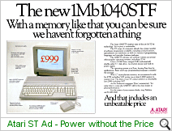
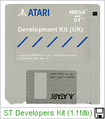

|
The Atari ST was the computer that would either make
Jack Tramiels new company a success or a failure. After taking the new company and
giving it a complete re-structuring, Jack Tramiel prepared his team to develop a new, more
advanced home computer.
After Commodore purchased Amiga Inc. from under Jacks
feet at the 11th hour, along went with it the core of a new computer which Jack Tramiel
wanted and needed. The Tramiels were furious about the Amiga buyout, and this would
be battled out in court for years to come.
Jack assembled his key people to a meeting in his
office in late 1984. He told Shiraz Shivji, his key engineer, to build a computer
which used 16-bit technology, ease of use, with cutting edge features - and deliver it
within 12 months at the latest.
In January 1985 in Las Vegas, Atari announced the
Atari ST range. This was an amazing story in itself, that a new computer system was
designed and built within this time frame, and even better for Jack, as Amiga's new
computer wasn't ready yet. Engineers had spent sleepless hours getting working
prototypes ready for the show - and the visitors were amazed at what they saw.
Announced were the 130ST and the 520ST, with
monitors, disk drives and printers. (Also present was the new re-packaged 8-Bit XE line of
systems). The ST's presented had a Windows driven interface powered by an Atari
implementation of DR's GEM (Digital Research's General Environment Manager), a standard
mouse, 16 colour and high-res monochrome displays' and a range of add-on's such as the
external disk drive and printers.
The 130ST wasn't launched (as well as a later 260STF/M),
due to the low RAM, and Atari launched instead a 520ST (512Kb RAM) to market in 3rd
quarter
of 1985. Later, Atari added the 1040STF, which had the external floppy disk drive of
the 520ST, built-in the main system, the first computer to launch with 1MB of RAM for
under a $1000.00, and the first computer company to utilise the 3.5" standard disk
and drive.

Within a 2 years of the Atari ST's launch, Atari was
back in profit. In 1984, Jack purchased an Atari which had lost $528 Million the
previous year ('83), $62 Million in 1984 and $14 Million in 1985. In 1986, now also
a publicly traded company (ATC), Atari released revenue figures of $44 Million Net on
sales of $258 Million. Now that's what you call a turn-around!
The ST was an instant success, making the cover of
BYTE magazine, wowing the music profession with it's built-in MIDI ports, and bringing
true "Power without the Price" to the consumer. (and those Germans just
couldn't get enough of this new computer - Atari's largest single market).
Atari were in a strong position, with a 16-bit
Motorola powered computer which was affordable and easy to use. Less than 18 months
later, Atari continued with a new range of ST computers, named the MEGA series. With
detachable keyboards, more memory (up-to 4MB!), and the availability of a 300dpi laser
printer, this was the ultimate in power and affordability, especially in the DTP and Music
recording/composing fields. The Atari DTP package, which contained a 2MB or 4MB Mega
ST, 30 or 60MB hard drive, Hi-resolution monitor and laser printer, came in at the base
price of $2999.99 - Half the price of IBM's equivalent laser printer alone!

But it was also in Music where the ST became an
essential tool. The clever inclusion of full MIDI (Musical Instrument Digital
Interface) ports, meant musicians could plug their keyboards and sequencers directly into
a computer. The Atari ST became the breeding ground of some of today's
best music
composition software, and many ST's are still in use today at recording studios around the
world.
|